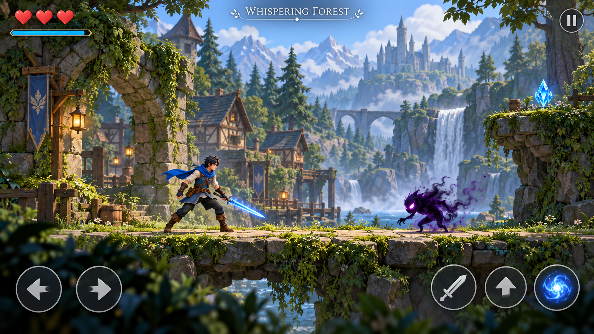
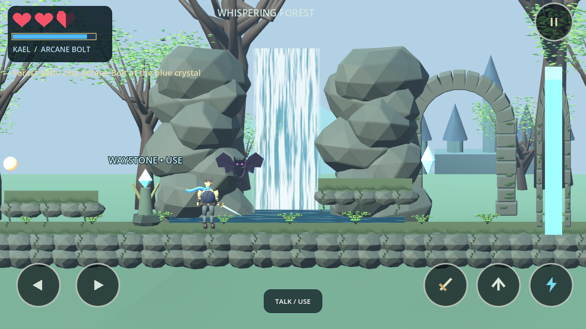
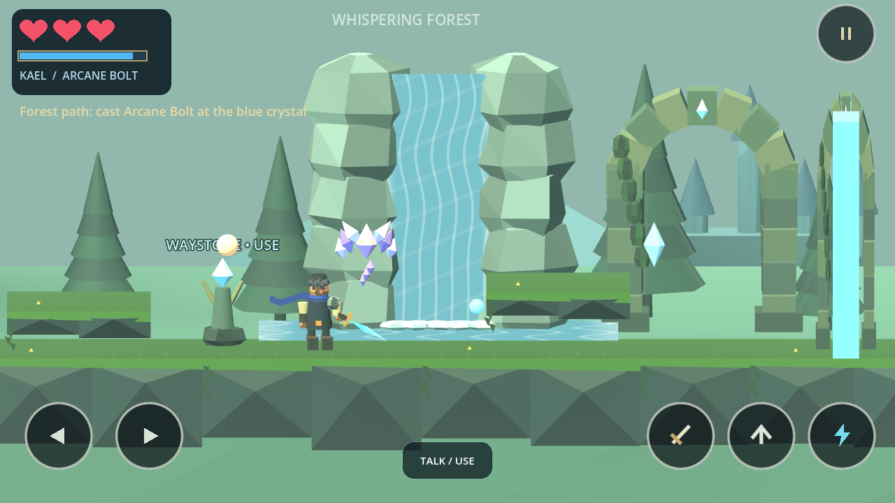
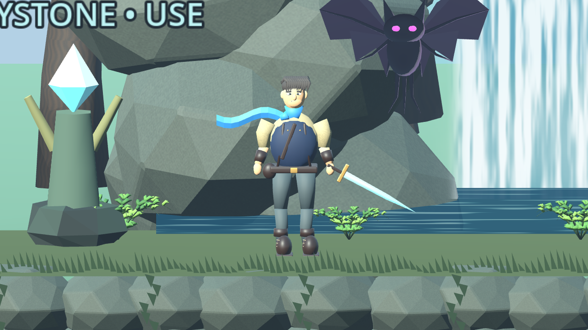

Full, uncropped images. Click either image for its original resolution. This comparison does not establish visual parity.



The following is a separate engine close-up, not the gameplay camera scale.

The concept still has much richer vegetation, more organic cliff composition, superior material painting, cloud/atmosphere detail, character animation and cinematic lighting. The current stones and waterfall framing remain visibly modular; the distant castle is legacy art. NPC duplication outside this scene has not been solved in this milestone. Synthesized audio is still temporary. This candidate requires the user's visual approval; it is not a finished or approved reproduction.
Android hardware performance, actual multitouch/lifecycle delivery and thermal behavior remain unverified. No phone or emulator is attached. Desktop software-renderer captures and automated tests are not Android measurements.